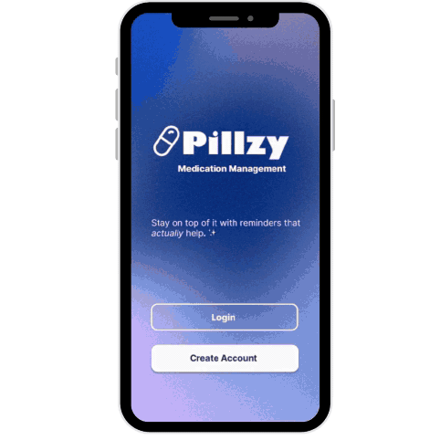
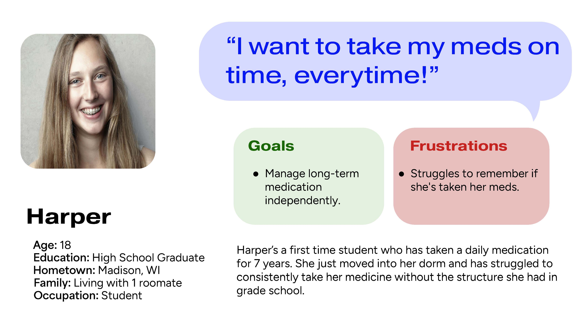
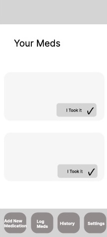
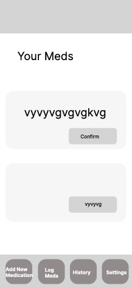
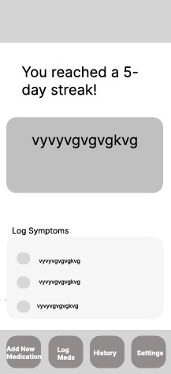
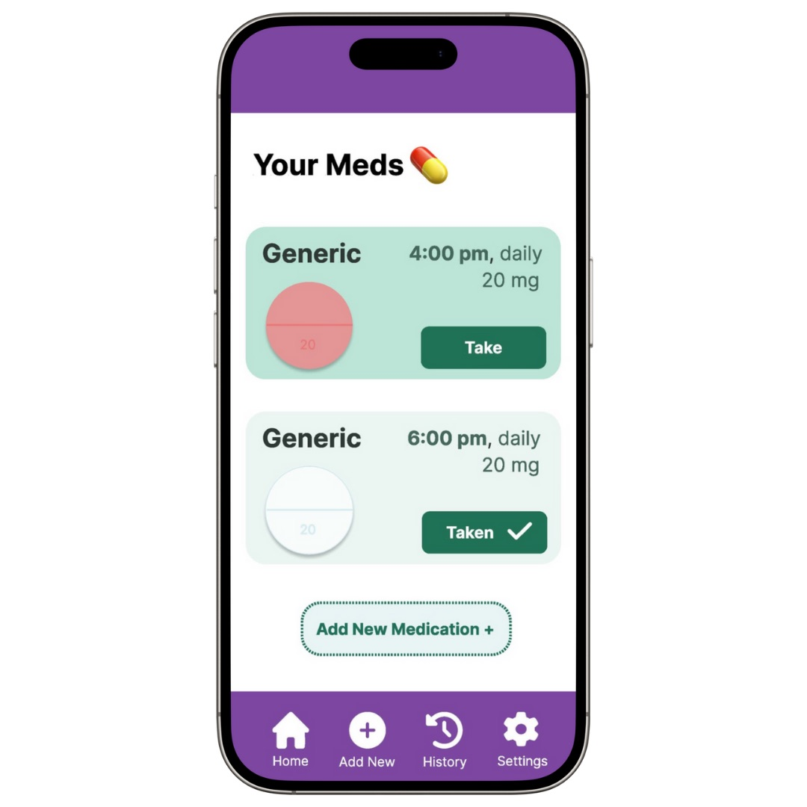
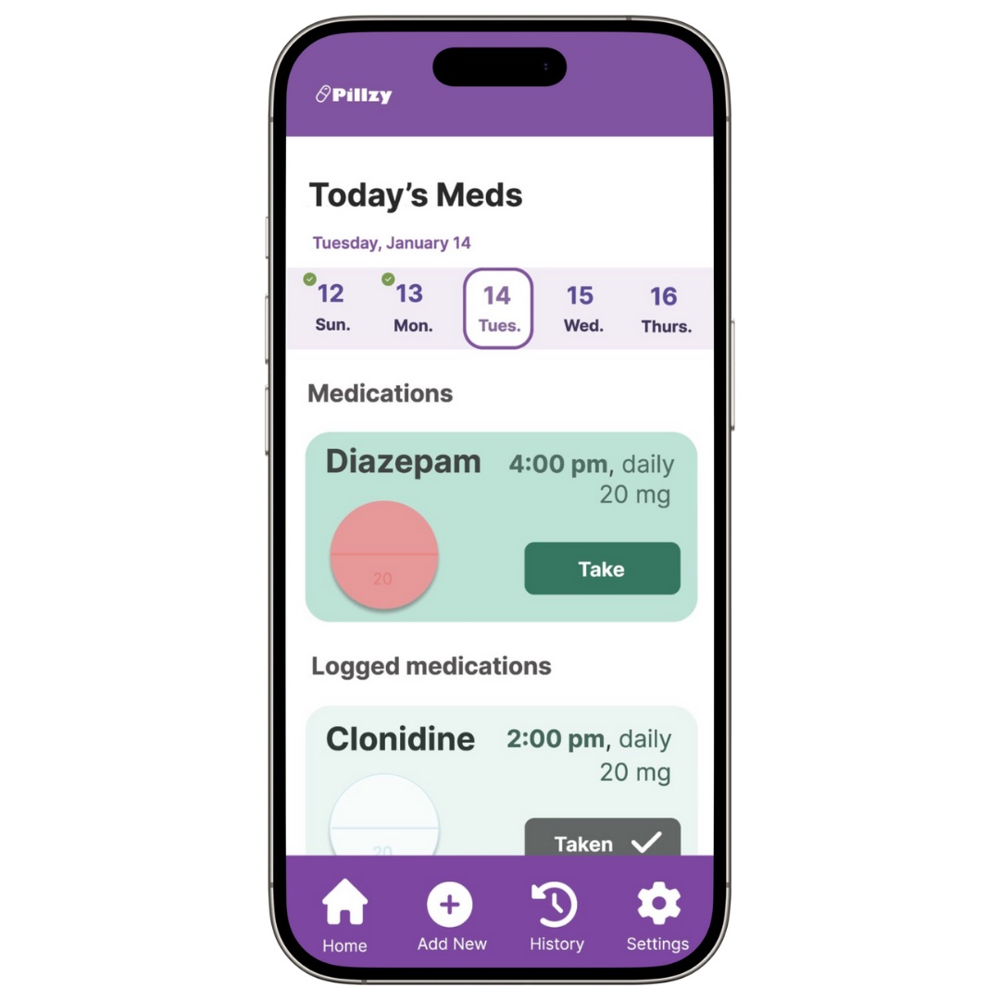
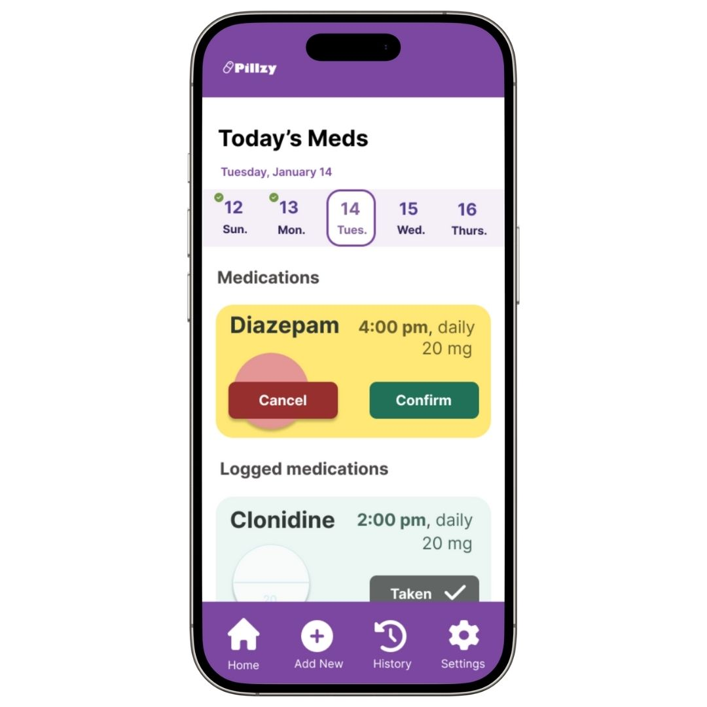
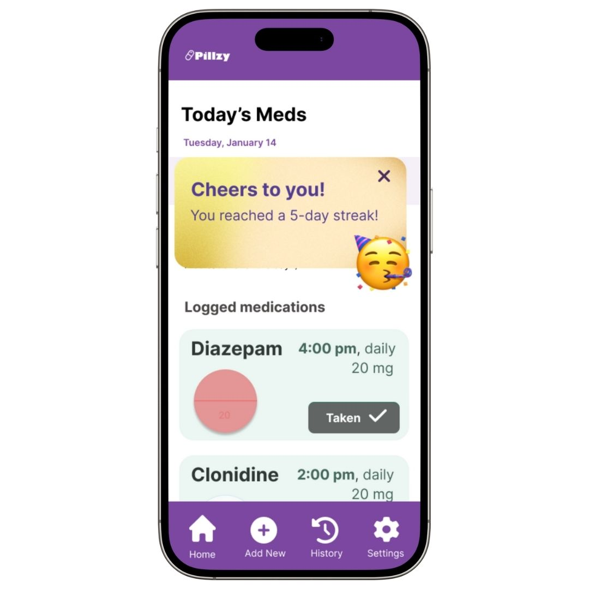
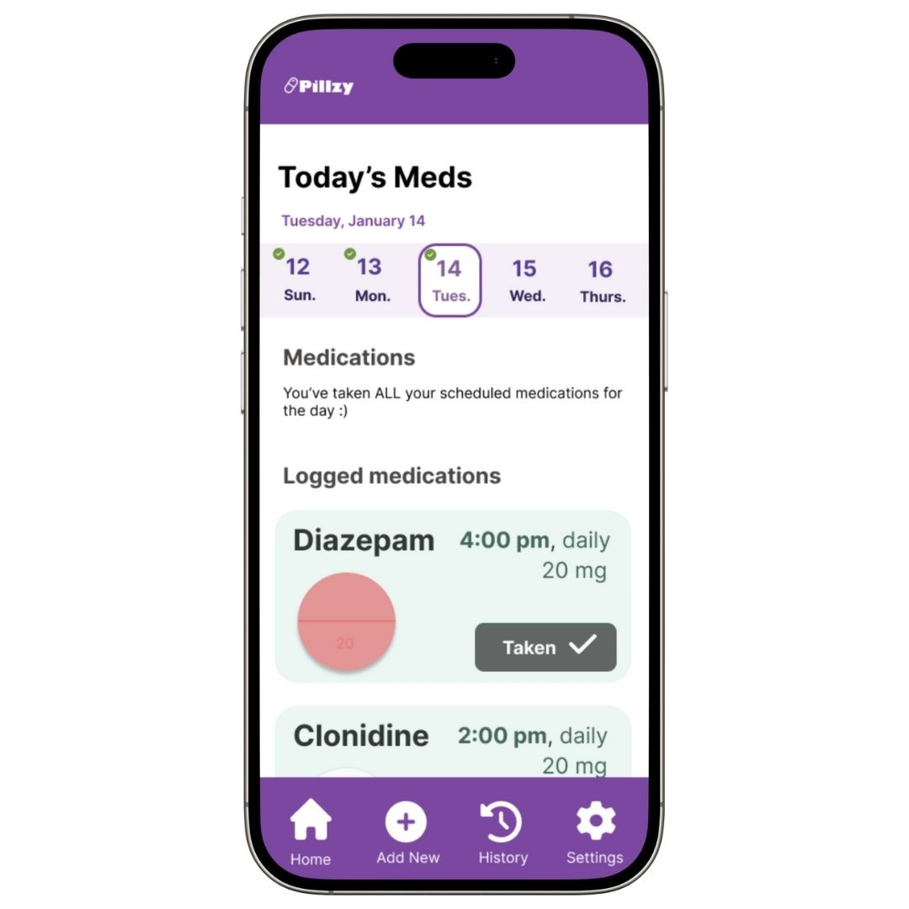

Explore Other Projects

Glammed
A tailored beauty tutorial experience.

Thrift Finder
An app that locates thrift shops.

Pillzy is your health journey—made easier.
Designed for young adults aged 18–24, Pillzy brings structure and support to everyday medication management. With smart reminders, streak tracking, and gamified progress, it helps turn routines into wins. The interface is simple. The tone is real. The goal? Empower you to take control of your health—one tap at a time. This prototype was created with intention: to reimagine what self-care can look like when it meets you where you are.

Managing medications isn’t always easy—especially when life is busy.
People forget doses, get overwhelmed by complex schedules, or drop off
apps that ask for too much. I wanted to explore how design could step in
and ease that experience with empathy, and simplicity.
Managing medications can feel overwhelming—especially for young adults juggling busy lives. Missed doses, confusing schedules, and overly complicated apps often add to the frustration. With Pillzy, I set out to design a solution that simplifies the process, offering clarity, empathy, and a touch of joy to health management.
When designing the wireframes for Pillzy I focused on creating a homepage that allowed users to quickly and easily log medications after opening the app.



Designing Pillzy was a journey of listening, learning, and refining. User testing revealed the importance of simplicity and clarity in creating a tool that truly supports its users.
What I Learned: Users appreciated the clean interface but needed more visual cues to guide their experience. They wanted a design that felt intuitive, empowering, and free of unnecessary complexity.

Before:
A clean but overly minimal interface.

After:
Clearer headings and a grey "Taken" button for better usability.
These changes weren’t just about aesthetics—they were about empowering users. By adding a calendar at the top, users could see the current date at a glance. Headings were introduced to make it clear which medications were already logged, and the "Taken" button was redesigned with a neutral tone to signify no further action was needed.
Every decision was rooted in the goal of making Pillzy a companion, not a chore.



Click the link below to view the interactive prototype of Pillzy.
A tailored beauty tutorial experience.
An app that locates thrift shops.